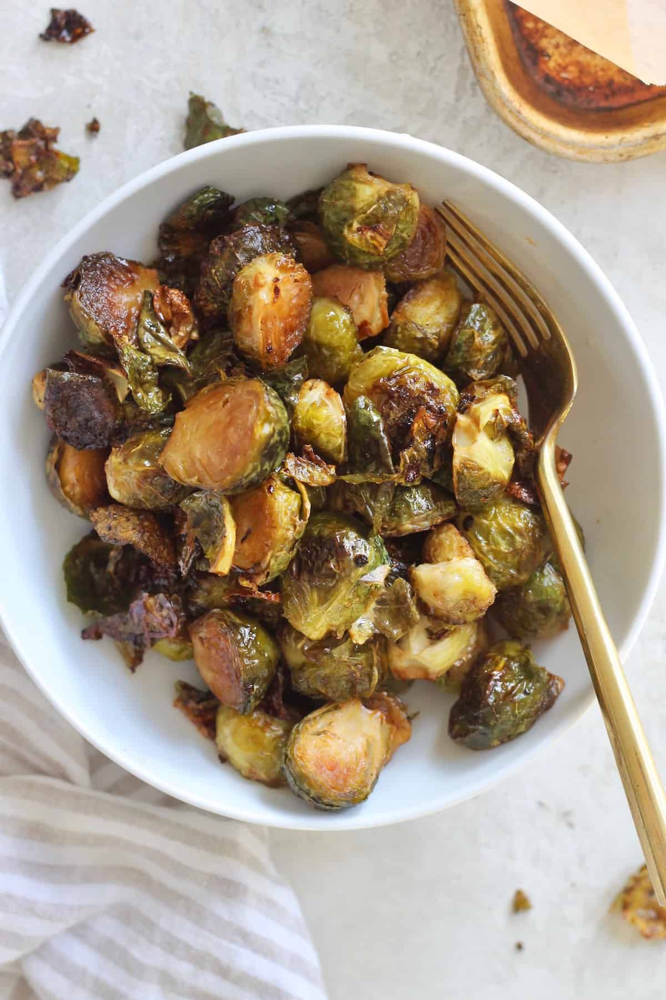

Maple Pecan Brussels Sprouts

A quick and easy side dish, with only 6 ingredients!
These sprouts are healthy, delicious, and especially cozy in the Fall. Everyone raves when I bring these to Thanksgiving dinner or a holiday potluck!
Ingredients:
- 1 lb Brussels sprouts, woody ends removed and halved (or quartered if large)
- 2 tbsp coconut oil, melted
- 1 tbsp pure maple syrup
- 1 tbsp balsamic vinegar
- ½ tsp fine sea salt
- Freshly ground black pepper, to taste
Steps:
- Preheat oven to 375F. Line a large baking sheet with parchment paper. (You can also roast directly on the pan for extra crispiness!)
- Place Brussels sprouts in a large bowl. Add the rest of the ingredients and toss to coat.
- Spread in an even layer cut-side down on baking sheet. Make sure Brussels sprouts aren't touching to ensure browning. Bake for 25 minutes, stirring halfway through. Serve warm!
Recipe and image from: Hummus Sapien